Make Plans from Here

Thiruvananthapuram
Thiruvananthapuram adorns the southern part of Kerala and is renowned as the capital of the state

Kollam
Known historically as a trade hub, Kollam is home to some of the exciting tourist destinations in Kerala
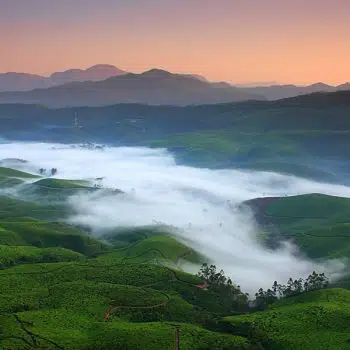Pathanamthitta
Pathanamthitta is a district bordered by the Western Ghats. The land is endowed with its vast forest lands and quaint villages.
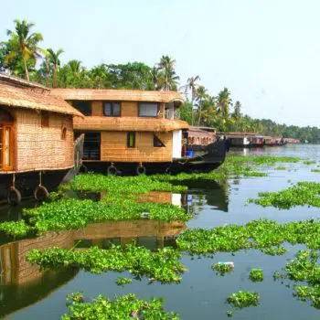Alappuzha
Alappuzha is one of the famous tourist places in Kerala. It is popularly known as the Venice of the East
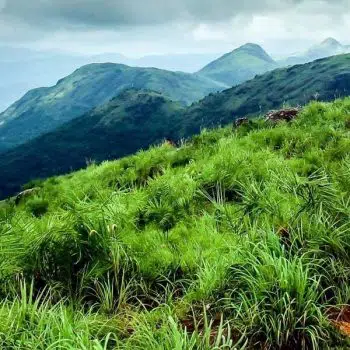Kottayam
Encompassing charming hill stations, holy centers, and refreshing backwaters, Kottayam fully captures the beauty of God’s own country.
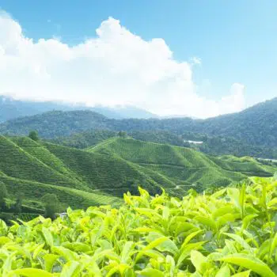Idukki
Located amidst the Western Ghats, Idukki is the second-largest district in the state. It has many great getaway locations for nature lovers.
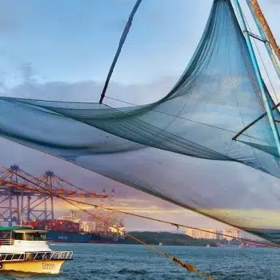Ernakulam
Overlooking the Arabian sea, Ernakulam allures tourists with its modern cities, pluralistic culture, and rich history.
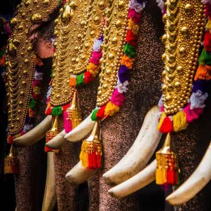Thrissur
Renowned as the cultural capital of Kerala, Thrissur is the best place to know about the cultural, spiritual, and religious leanings of Kerala.
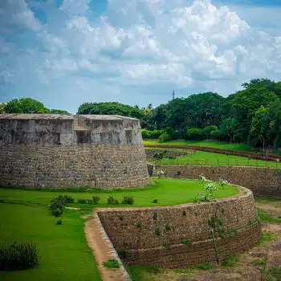Palakkad
Known as the rice bowl of Kerala, Palakkad is famous for its vast paddy fields and beautiful villages.
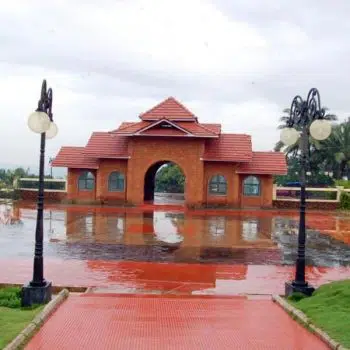Malappuram
With a rich history, fast-developing cities, and beautiful natural locations, Malappuram is a great tourist place in Kerala.
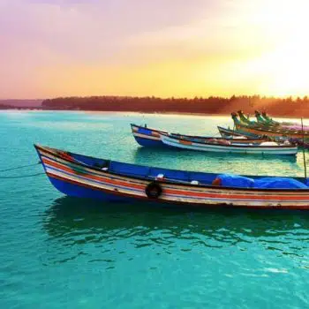Kozhikode
Kozhikode is also known as Calicut is a historic land in Kerala famous for its trade relations and spices.
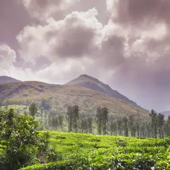Wayanad
With thick forests, majestic hills, and charming waterfalls, Wayanad is a paradise for environmentalists.
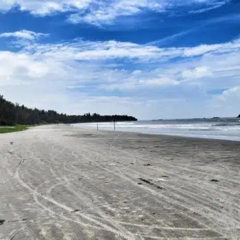Kannur
Kannur is a peculiar district in the Northern region of Kerala. Part of the Madras Presidency during British rule, the land was under many foreign and native rulers.
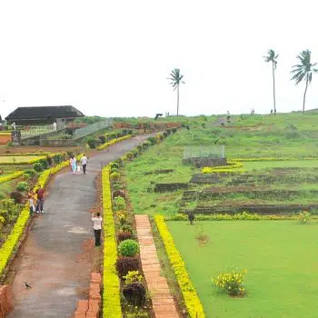Kasargod
Kasargod is the northernmost district in Kerala. Its culture is influenced by that of Karnataka, the neighboring state.
Download Our App
Download App for both Android and ios